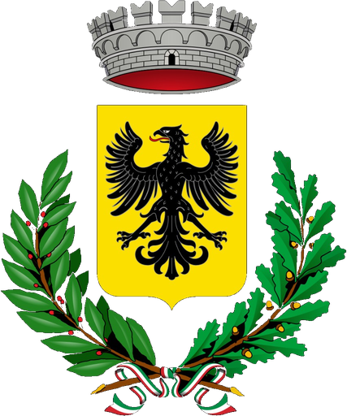

Pro Loco Casalborgone APS
Via Gaiato 6/a+39 347 8781565
prolococasalborgone@gmail.com
Presidente: Piera Barbero. Informazioni su feste, manifestazioni e vita del paese.

CasalborgonePiemonte · ItaliaVerso le colline
Nel Piemonte collinare, tra Torino, Chivasso e il Monferrato.
Il punto di partenza
Il Municipio si trova in Piazza Bruna 14, nel centro di Casalborgone. Da qui il nucleo storico e Piazza Statuto si raggiungono a piedi.
Piazza Bruna 14Per feste, visite e attività, contattare il punto comunale o la rete turistica delle colline.
+39 347 8781565
prolococasalborgone@gmail.com
Presidente: Piera Barbero. Informazioni su feste, manifestazioni e vita del paese.
Turismo nel cuore del Piemonte: informazioni per il territorio collinare.
Casalborgone appartiene alla Città metropolitana di Torino e si trova nelle colline a sud del Po. Prima di partire, verifica itinerario, traffico e trasporto pubblico con fonti aggiornate.
Raggiungi l'area di Chivasso e prosegui verso le colline. Calcola il percorso aggiornato sul tuo navigatore.
Casalborgone si trova a sud-est di Chivasso, oltre il Po, lungo le strade collinari.
Il centro è raccolto, ma presenta salite e pavimentazioni storiche. Indossa scarpe comode.
Contatti essenziali durante la visita. Attività e recapiti locali possono cambiare: verificare prima di partire.
Numero unico europeo 112. Emergenza sanitaria 118.